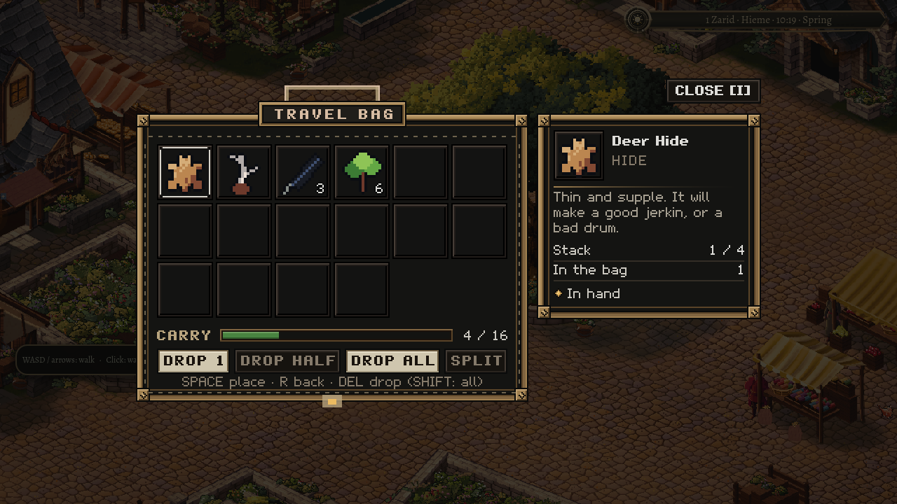

What you leave behind
30 October 2026
Put a feather down in the square. Leave the game. Come back. It should still be your feather, in that square.
Oakwell already lets you buy from a travelling cart, carry supplies to a workshop and earn a companion's trust. Those small exchanges give its people a reason to be there. This piece of work gives the traveller a way to handle the things that make those exchanges possible.
The travel bag now opens in the playable town. Its sixteen pockets hold the same belongings that merchants see across their counters. Lift something, move it into another pocket, combine matching stacks or split a few pieces off for later. The leather, stitching and brass belong beside the rest of the town's instruments; the contents belong to the journey you are making.

Make room without throwing things away
Sometimes a full bag needs a practical answer. The bag offers a choice of putting down one item, half a stack or the whole thing. What leaves the pocket becomes a small visible pile in the world. Close the bag, move beside it and choose to pick it up again.
The pile waits where you left it. Walking nearby does not pull it toward you. If only part will fit, you take that part and the rest remains on the ground. A completely full bag leaves everything in place, with an explanation of why it cannot be picked up.

That sounds modest until there are stairs and rooms involved. An item upstairs belongs upstairs. A wall still separates the person from the thing on its other side. Putting something down halfway along a stair is refused, so it cannot end up between floors. The same physical rules that make the inn a place to walk through also matter to what you carry through it.
A specimen keeps its story
Some belongings contain more than a name and a number. An unfamiliar herb can carry a source, a condition and a judgement you have learned about it. Moving it to another pocket or putting it on the ground must preserve those details. A doubtful identification must remain doubtful when you pick the specimen up again.
Item use follows the actions the town already supports. The bag explains when something has no available use. It does not consume an antler merely because the traveller pressed a button, or quietly invent a new effect for an ordinary ingredient.
The return matters
The bag and the things on the ground are saved together. Returning restores both sides of the decision: the feather missing from its pocket and the feather waiting in the square. Picking it up then removes that pile as it returns to the bag.
This first pass belongs to Oakwell's existing saved community. Equipment, more item actions and a common character save across every town still need their own work. The useful foundation is here: belongings can occupy a real place, make room for another choice, and survive the player's return.
Sprawl has large creatures and distant places ahead of it. Giving a small possession a dependable place in the world is part of making those journeys feel worth taking.